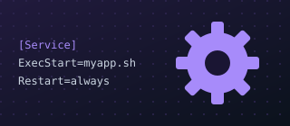

Oddiy skriptni systemd xizmatiga aylantiring: tizim qayta yuklanganda u avtomatik ishga tushishi kerak.
/usr/local/bin/myapp.sh skriptini yarating/etc/systemd/system/myapp.service unit faylini yozingQiyin bo'lsa, Maslahatlarni oching — ular bittadan ochiladi, o'zingiz o'ylashga imkon qoladi.
{{hintsOpen}} / 4 ochildi · maslahatlar ballga ta'sir qilmaydi
root@lab-3f9a:~# cat /usr/local/bin/myapp.sh #!/bin/bash while true; do echo "myapp alive"; sleep 30; done root@lab-3f9a:~# cat /etc/systemd/system/myapp.service [Unit] Description=My App [Service] ExecStart=/usr/local/bin/myapp.sh Restart=always [Install] WantedBy=multi-user.target root@lab-3f9a:~# systemctl is-enabled myapp disabled root@lab-3f9a:~#